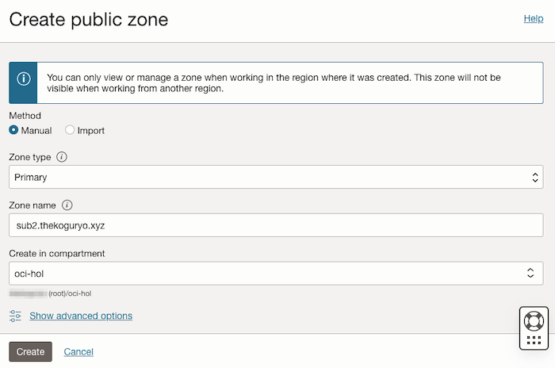
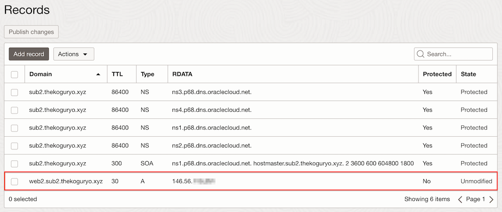
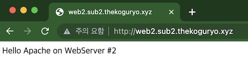

11.2 GoDaddy의 서브 도메인 관리를 OCI DNS 서비스에 delegation 하기
이미 사용하는 Domain Name과 DNS 서버가 있는 경우에, 기존 관리하는 방식을 사용하면서, OCI를 통해서 서비스하는 자원들에 대해 별도로 관리하고자 하는 경우가 있습니다. 서브 도메인을 분리하여, 분리된 서브 도메인에 대한 DNS 관리는 OCI DNS 서비스에 위임하는 경우에 대해서 알아보고자 합니다.
테스트를 위해 GoDaddy 사이트에서 구매한 도메인 네임(thekoguryo.xyz)을 사용하였습니다. 이전에 사용한 freenom은 2023년 4월 기준 정상 서비스가 되지 않아, GoDaddy를 이용해 테스트 하였습니다.
- 기본 DNS 관리 환경에서 사용중인 도메인이 있습니다. 예, thekoguryo.xyz
- 기본 DNS 관리 환경에서 sub1.thekoguryo.xyz 서브 도메인을 관리하고 있습니다.
- 새로 사용하는 OCI 상의 자원들을 위해 sub2 서브 도메인을 생성하고, sub2.thekoguryo.xyz는 OCI DNS 서비스에 관리를 위임하고자 합니다. 즉, web2.sub2.thekoguryo.xyz 등 새로운 호스트의 DNS는 OCI DNS 서비스에만 등록하면 되도록 하고자 합니다.
기존 DNS 관리 환경 - GoDaddy 예시
-
GoDaddy에 접속합니다.
-
사용하는 도메인에 대해서 Manage DNS 화면으로 이동합니다.
-
아래 예시와 같이 서브 도메인 sub1에 대해서 레코드를 등록해 관리하고 있는 상태입니다.
-
등록된 주소를 통해 접속해 봅니다. 등록된 DNS 정보가 잘 동작하고 있습니다.
OCI DNS 서비스 설정
-
OCI 콘솔에서 내비게이션 메뉴를 엽니다. Networking > DNS Management > Zones 항목으로 이동합니다.
-
Public zones에서 Create Zone 클릭
-
생성정보 입력
-
Method: Manual
-
Zone type: Primary
-
Zone name: 관리할 서브 도메인을 입력합니다. 예, sub2.thekoguryo.xyz

-
-
Create 클릭
-
생성된 zone을 클릭합니다.
-
Zone 정보에서 네임 서버 주소들을 확인할 수 있습니다.
기존 DNS 관리 환경에서 서브도메인 관리 위임하기 - GoDaddy 예시
-
GoDaddy 화면으로 돌아갑니다.
-
사용하는 도메인에 대해서 Manage DNS 화면으로 이동합니다.
-
NS 타입으로 Name에 서브 도메인 명을 입력합니다. Value에는 앞서 OCI DNS의 Zone 정보에 있는 네임서버 주소를 입력합니다. Add More Records를 클릭하여, 네임서버 주소 총 4개를 추가하고 저장합니다.
-
이제 서브도메인 sub2.thekoguryo.xyz에 대해서는 OCI DNS 서버로 위임이 되었습니다.
OCI DNS 서비스에서 DNS 레코드 추가하기
-
OCI 콘솔에서 생성한 DNS Zone 화면으로 이동합니다.
-
왼쪽 아래 Resources > Records로 이동하면 생성된 항목을 볼 수 있습니다. Zone 내부에 NS 유형과 SOA 유형의 레코드가 생성되어 있습니다. NS는 네임 서버 레코드, SOA는 권한 시작 레코드입니다.
-
새 레코드를 추가하기 위해 Add Record를 클릭합니다.
-
DNS Records로 컴퓨트 인스턴스에 있는 Public IP를 레코드를 추가해 봅니다.
-
Record Type: A - IPv4 Address
-
Name: web
-
TTL: 30, 우측 자물쇠는 클릭하여 잠금 해제 후 TTL 값 입력
-
Rdata mode: Basic
-
Address: 매핑할 인스턴스의 Public IP
-
-
Submit 클릭
-
변경분을 반영하기 위해 Publish change 클릭
-
확인 창이 뜨면 한번 더 Publish change 클릭
-
레코드 추가 및 반영 완료

-
등록된 주소를 통해 접속해 봅니다. 등록된 DNS 정보가 잘 동작하고 있습니다.

DNS 질의 테스트
-
GoDaddy에서 직접 관리하는 주소(web1.sub1.thekoguryo.xyz)를 dig +trace 명령으로 DNS 질의과정을 확인해 봅니다. GoDaddy에 Name Server로 등록되어 있던, ns52.domaincontrol.com에서 최종 IP를 가져오는 것을 볼 수 있습니다.
$ dig +trace web1.sub1.thekoguryo.xyz ; <<>> DiG 9.10.6 <<>> +trace web1.sub1.thekoguryo.xyz ;; global options: +cmd . 492520 IN NS l.root-servers.net. . 492520 IN NS k.root-servers.net. . 492520 IN NS j.root-servers.net. . 492520 IN NS g.root-servers.net. . 492520 IN NS e.root-servers.net. . 492520 IN NS d.root-servers.net. . 492520 IN NS h.root-servers.net. . 492520 IN NS b.root-servers.net. . 492520 IN NS a.root-servers.net. . 492520 IN NS f.root-servers.net. . 492520 IN NS c.root-servers.net. . 492520 IN NS m.root-servers.net. . 492520 IN NS i.root-servers.net. . 492520 IN RRSIG NS 8 0 518400 20230506170000 20230423160000 60955 . ...... ;; Received 1109 bytes from 168.126.63.1#53(168.126.63.1) in 8 ms xyz. 172800 IN NS z.nic.xyz. xyz. 172800 IN NS x.nic.xyz. xyz. 172800 IN NS y.nic.xyz. xyz. 172800 IN NS generationxyz.nic.xyz. xyz. 86400 IN DS 3599 8 2 B9733869BC84C86BB59D102BA5DA6B27B2088552332A39DCD54BC4E8 D66B0499 xyz. 86400 IN DS 3599 8 1 3FA3B264F45DB5F38BEDEAF1A88B76AA318C2C7F xyz. 86400 IN RRSIG DS 8 1 86400 20230507050000 20230424040000 60955 . ...... ;; Received 686 bytes from 202.12.27.33#53(m.root-servers.net) in 7 ms thekoguryo.xyz. 3600 IN NS ns52.domaincontrol.com. thekoguryo.xyz. 3600 IN NS ns51.domaincontrol.com. 2tjms8vm0h8n7j9e748d19gpnujm0emj.xyz. 3600 IN NSEC3 1 1 0 - 2TJVVSOC6CRR8B060M9FH0MPV66FBD17 NS SOA RRSIG DNSKEY NSEC3PARAM 2tjms8vm0h8n7j9e748d19gpnujm0emj.xyz. 3600 IN RRSIG NSEC3 8 2 3600 20230511041210 20230411070205 53358 xyz. ...... 2372ggrgccgilepboq3aol06ev9fc9e0.xyz. 3600 IN NSEC3 1 1 0 - 23A0806OHH7S36DBS305MO6OUMIVAI41 NS DS RRSIG 2372ggrgccgilepboq3aol06ev9fc9e0.xyz. 3600 IN RRSIG NSEC3 8 2 3600 20230429224834 20230331074050 53358 xyz. ...... ;; Received 593 bytes from 212.18.249.42#53(generationxyz.nic.xyz) in 44 ms web1.sub1.thekoguryo.xyz. 600 IN A 152.69.xxx.xxx thekoguryo.xyz. 3600 IN NS ns52.domaincontrol.com. thekoguryo.xyz. 3600 IN NS ns51.domaincontrol.com. ;; Received 124 bytes from 173.201.73.26#53(ns52.domaincontrol.com) in 143 ms -
GoDaddy에서 OCI DNS 서비스로 위임한 주소(web2.sub2.thekoguryo.xyz)를 dig +trace 명령으로 DNS 질의과정을 확인해 봅니다. GoDaddy에 Name Server로 등록되어 있던, ns51.domaincontrol.com을 거쳐 OCI Name Server인 ns1.p68.dns.oraclecloud.net에서 최종 IP를 가져오는 것을 볼 수 있습니다.
$ dig +trace web2.sub2.thekoguryo.xyz ; <<>> DiG 9.10.6 <<>> +trace web2.sub2.thekoguryo.xyz ;; global options: +cmd . 488765 IN NS m.root-servers.net. . 488765 IN NS k.root-servers.net. . 488765 IN NS e.root-servers.net. . 488765 IN NS c.root-servers.net. . 488765 IN NS h.root-servers.net. . 488765 IN NS b.root-servers.net. . 488765 IN NS f.root-servers.net. . 488765 IN NS g.root-servers.net. . 488765 IN NS j.root-servers.net. . 488765 IN NS d.root-servers.net. . 488765 IN NS i.root-servers.net. . 488765 IN NS a.root-servers.net. . 488765 IN NS l.root-servers.net. . 488765 IN RRSIG NS 8 0 518400 20230506170000 20230423160000 60955 . ...... ;; Received 1109 bytes from 168.126.63.1#53(168.126.63.1) in 11 ms xyz. 172800 IN NS generationxyz.nic.xyz. xyz. 172800 IN NS z.nic.xyz. xyz. 172800 IN NS x.nic.xyz. xyz. 172800 IN NS y.nic.xyz. xyz. 86400 IN DS 3599 8 1 3FA3B264F45DB5F38BEDEAF1A88B76AA318C2C7F xyz. 86400 IN DS 3599 8 2 B9733869BC84C86BB59D102BA5DA6B27B2088552332A39DCD54BC4E8 D66B0499 xyz. 86400 IN RRSIG DS 8 1 86400 20230507050000 20230424040000 60955 . ...... ;; Received 686 bytes from 192.36.148.17#53(i.root-servers.net) in 52 ms thekoguryo.xyz. 3600 IN NS ns52.domaincontrol.com. thekoguryo.xyz. 3600 IN NS ns51.domaincontrol.com. 2tjms8vm0h8n7j9e748d19gpnujm0emj.xyz. 3600 IN NSEC3 1 1 0 - 2TJVVSOC6CRR8B060M9FH0MPV66FBD17 NS SOA RRSIG DNSKEY NSEC3PARAM 2tjms8vm0h8n7j9e748d19gpnujm0emj.xyz. 3600 IN RRSIG NSEC3 8 2 3600 20230511041210 20230411070205 53358 xyz. ...... 2372ggrgccgilepboq3aol06ev9fc9e0.xyz. 3600 IN NSEC3 1 1 0 - 23A0806OHH7S36DBS305MO6OUMIVAI41 NS DS RRSIG 2372ggrgccgilepboq3aol06ev9fc9e0.xyz. 3600 IN RRSIG NSEC3 8 2 3600 20230429224834 20230331074050 53358 xyz. ...... ;; Received 593 bytes from 185.24.64.42#53(y.nic.xyz) in 44 ms sub2.thekoguryo.xyz. 3600 IN NS ns4.p68.dns.oraclecloud.net. sub2.thekoguryo.xyz. 3600 IN NS ns3.p68.dns.oraclecloud.net. sub2.thekoguryo.xyz. 3600 IN NS ns2.p68.dns.oraclecloud.net. sub2.thekoguryo.xyz. 3600 IN NS ns1.p68.dns.oraclecloud.net. ;; Received 148 bytes from 97.74.105.26#53(ns51.domaincontrol.com) in 138 ms web2.sub2.thekoguryo.xyz. 30 IN A 146.56.xxx.xxx sub2.thekoguryo.xyz. 86400 IN NS ns1.p68.dns.oraclecloud.net. sub2.thekoguryo.xyz. 86400 IN NS ns3.p68.dns.oraclecloud.net. sub2.thekoguryo.xyz. 86400 IN NS ns2.p68.dns.oraclecloud.net. sub2.thekoguryo.xyz. 86400 IN NS ns4.p68.dns.oraclecloud.net. ;; Received 164 bytes from 108.59.161.68#53(ns1.p68.dns.oraclecloud.net) in 9 ms -
서브도메인에 대한 DNS 관리를 OCI DNS 서비스에 위임하는 것이 잘 동작하는 것을 확인하였습니다.
이 글은 개인으로서, 개인의 시간을 할애하여 작성된 글입니다. 글의 내용에 오류가 있을 수 있으며, 글 속의 의견은 개인적인 의견입니다.